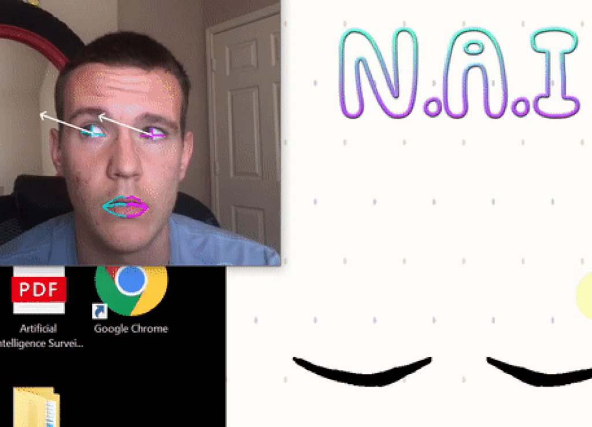
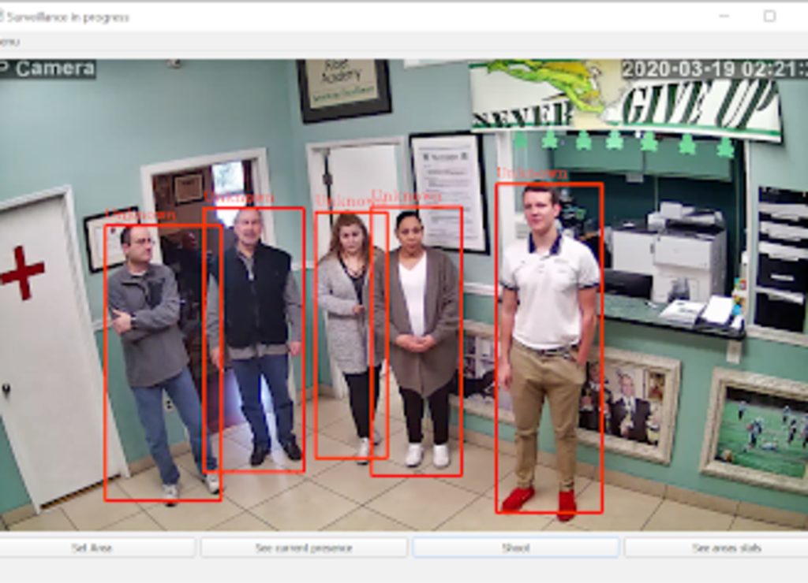
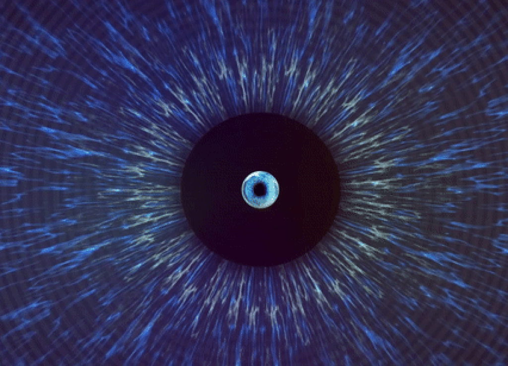

IT Enthusiast - Machine Learning Practitioner- Entrepreneur
Projects



Navigational Artificial Intelligence
NAI enables people to navigate around their computers, phones and other electronic devices by only using their eyes. This includes moving the mouse cursor and pressing the buttons. Me and my team developed this project aiming to help disabled people to use their electronic devices.
Use the links below to check out the source code, presentation and the blog post about NAI:
Artificial Intelligence Surveillance System
Security cameras’ territory surveillance systems are widely used all across the world nowadays. However, these systems are not as efficient as they could potentially be. It is often difficult for their users to obtain a large spectrum of information about specific objects, areas, and subjects over a long period of time. In addition, collecting statistics for further analysis from these surveillance systems is often inconvenient and inefficient.
Let’s observe an example: a manager wants to improve productivity and quality of work in the company. Using security cameras,manager wants to figure out how much time each of his employees spend working over a certain time period. Obviously, watching the recordings himself is neither feasible nor practical since such recordings could span hours, days, or even longer.
This problem can be extended to apply to security workers, scientists collecting statistics, market analysts, data engineers, private property owners, incarceration facilities and many others.
I tried to solve this problem by building a user-interactive Artificial Intelligence-powered surveillance system. This system utilizes neural networks to detect and identify human objects in surveillance cameras’ recordings, then if requested provide the user with a graphical representation of surveillance statistics via its own graphical user interface
Use the links below to check out the source code, presentation and the blog post about AISS:
LyricNet
Me and my team really wanted to help artists to improve the process of creating lyrics for their songs, we wanted to give them more inspiration, and help them make our world more beautiful. In order to do that we decided to see what went on in the minds of the most successful music artists of our time, like Taylor Swift and Drake. We wanted to see what makes these people so unique and share it with everyone else. Of course, we couldn't pick at their brains and get them to write lyrics for us, so we decided to build an AI-powered web application to do that for us.
What it does:
Auto-filling lyrics in the style of an artist given a few starting lyrics (artists include those that are pre-trained by us, and custom artists that can be trained on the spot using song lyrics pulled from the genius API)
Answers questions in the style of a chosen artist given a question
Generates a full set of lyrics based on a style of a specified artist
Use the links below to check out the source code, presentation and the blog post about LyricNet:
Irodology Web
Can Neural Network predict if the person is sick by only looking at his eyes? With the tool that me and my teammates built for eHacks Hackathon, called Irodology Web - the answer is yes.
A Neural Network that I trained is able to separate the eyes of sick and not sick people and tell person a likelihood of him being sick.
Use the links below to check out the source code, presentation and the blog post about AISS:
Matt App Marketing and Development
I am helping Matt Inc. with developing their new app called "Matt". I am responsible for marketing, testing and innovation. Right now our app has 200k organic users and this number only keeps growing.
Hey! I'm Matvei, raising high school senior interested in Data Science, Machine Learning, Business and Entrepreneurship. I have 3 years of software development experience. I am constantly looking forward to learn new things, build amazing projects and improve my skills.
I am also a 2 times California State Champion for D1 Boys Varsity Basketball, with Ribet Academy Fighting Frogs.
I am open to work and cooperate. You can check out some of my projects on this website. I am open to any suggestions, don't hesitate to contact me!